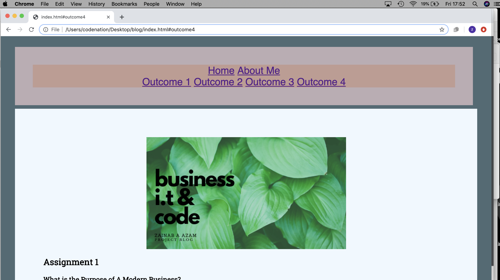
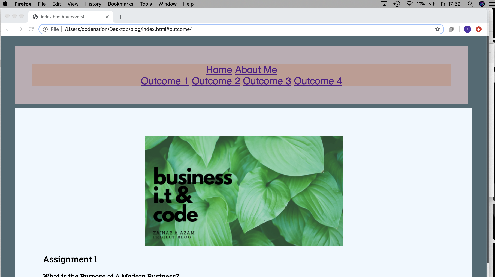

Assignment 1
What is the Purpose of A Modern Business?
I.T. is a form of technology that has served us the great use of making our lives easier and better. When there is a problem, IT is used to not only solve the problem but also make the whole problem a swifter endeavor to deal with. Entrepreneurs and businesses find ways in which they can appeal to the consumer and sell to the mass market. Experience technical assistants who can use certain technology devices to make these ideas come to life will be hired in in most cases to accomplish some of these goals. Technology allows these goals to become a reality. These days it is a huge challenge for businesses to have competitive edge without using technology. Some of the key ways technology is used in modern business are through productivity, by being able to use project and task management tools on a daily basis to stay on top of business responsibilities. Another and more obvious one is Finance, I.T. can be used is for selling online to create an income stream for the business. Also, using accounting software, sharing files for an improvement in booking operations. Marketing is also a huge part of promoting a business and in the modern era there is not a better way than using IT to get your business out there. You can use it to use social media sites like Facebook, Instagram, and create your own website. Collecting emails and optimise the blessing and curse of email marketing. Video marketing, blog making, and pinning on pinterest are all great ways to use as marketing tools from IT.
Digital Projects - How Can They Be Completed Sucsessfully?
Digital Projects are conducted every day in the modern era of business and ecommerce. In order to successfully complete a digital projects there are a few things that need to be set in place. It is useful to have an initial brainstorming session with team members or just yourself. After it's a good idea to set forth and create a plan. In the plan it is important to discuss the requirements to get the idea off the ground, functionality, expenses, design, and marketing development. Once planning is set, it is time for the development process. Development includes creating the draft versions and a final product of the project. Revisions and polishings are made to project, and then testing and development is employed into the procedures. This element of creating a project is called Quality Management (QA) In the QA phase of the project you or your team members conduct an analysis of the final project before it goes live. Once the project is fully tested, it is now time to go live! Once the project is up off the ground and running, we move on into meaning the project. Maintenance includes project support, addressing an issues that may come up, and watching your project evolve. This is the general process of creating a digital project. It is important to be organised, creative, and motivated when creating a project of any kind, but specially for a project online it is vital for a comprehensive knowledge of how the online world works and how to get tasks done regarding computers and technology. Some of the best tools you can use are a PC, Laptop device, a phone, spreadsheets and powerpoints, social media, ecommerce platforms.
Plan me - Plan, Plan, Trello!
To make a website, I would create a step-by-step system implementing each step onto a Trello platform. In order to work effectively, I will use Trello and Kanban for productivity. Trello will be most useful for inputting each step and crrating a to-do list for myself. Kanban on the other hand, is great for project management tool. It helps in effective visualisation work and making a proficient workflow system. Kanban is also excellent for giving feedback and other members of the team will be able to participate in that. By implementing these components in the project, I think it makes for a very agile procedure.
Trello Board here: https://trello.com/b/mmjnuTsc/trello-for-brief-1
Digital Projects - What makes them Fail?
Sometimes things fail, and digital project often do. “Somewhere between 70% and 90% of digital projects fail.... Couchbase found that 90% of projects failed to deliver as promised, failed to deliver beyond minor improvements, or completely flopped. That’s a wide failure range.” Projects tend to fail for a number of reasons, the Harvard Business Review states “With innovative information technology, however, executives sometimes lose their rational decision approaches. Certainly it’s true that in times of radical technological change there’s a lot of figuring out to do.” One of the main reasons that a project may fail is failing to account for the business process… One of the main reasons a project can go under are in the initial development phase; poor project definition and expectation setting in the beginning stages can affect the project overall. Like a domino effect. I fell victim to this in my first digital venture when creating an app at code nation. Setting way to high of an expectation in a short period of time, admittingly setting a standard within time frame would be advisable. Digital Projects are often too ambitious in the initial stages, Enginees suggests in creating a time frame extension by 20-30% for all projects. Another reason is investing in gadests and “shiny things” and not so much in customer service. “For instance, say a CEO asks a digital project manager to deploy a CRM. The CEO just read an article that said CRMs are the future, and she wants one.”... The project brief here is not necessarily valuing the customer’s needs. In the future this will cause further issues down the line. It is better to develop an idea that considers the customers values, and not just going about a task due to the CEO’s say so. This is a major reason why projects of the digital means fail.
What's The Right Technology To Use? - Digital Projects
When determining what IT systems to use for a particular task, there are a few ways to go about it. An easy method is to first make a note of what the particular job is an what tasks it entails. For example if you creating an application, then it would be necessary to include software programs such as Slack and Trello to communicate and organise tasks within the company. The means of creating the application itself will need to be chosen, software programs such as Xcode are a great means for creating content for applications as it is a free tool and easy to use. In order to pick the right tools common knowledge is helpful, if you do not have any prior knowledge to what kinds of software programmes are available to you for that specific task then it would be necessary to find reviews online and do some research before starting the project at hand. Before purchasing a product, it is good to have a look at each tool in depth and then decide what fits best in your needs.
Technologies? Which is Best to Use For Me?
Chosen technologies such as Trello, git, and GitHub can be extremely useful. Trello is great for building project related boards to share with teams members. By creating boards with lists, the project is cut down into bite size pieces and easier to manage. Git and GitHub are extremely important components in creating efficient and effective contribute code, “99% of the companies that can hire you will use Git and GitHub”. With Git, whenever a new component of code is entered, unlike Microsoft word, git will automatically remember the changes ,ade to the code and update the programme itself. Even if thousands of changes have been made each change is remembered by Git concisely and effectively. Once more, if you are in need of reverting back to make some changes that you did even 5 months ago, Git allows you to do so with ease and precision. It also allows your programmer to make branches of code revert changes and merge conflicts etc. These are extremely helpful when it comes to solving a problem in software on a day to day at the office. Git is most likely describes as the main solution in the computing world these days. GitHub however is viewed more an an extra layer used on top of Git, that gives solutions to common problems found in reviews and bugs found in management, pull requests and so on.
Copyright me
Describe legal guidelines and constraints that impact digital projects – How does GDPR impact digital projects?
Digital projects come with their fair share of constraints and legal issues that must be abided from the start. Your business will definitely need to have some form of a terms and conditions policy in order to protect itself. This clarifies the rights and obligations between you and the user. The terms should include everything from what is acceptable and unacceptable on web content, availability of website, links, website products, and cookies. Due to an ever growing online presence, the web interface has changed dramatically than when it first lay its seed as “the internet”. This has evolved our way of communicating and tasks. Personal data is constantly shared online, and sometimes we don't really think about where it can go. Addresses, bank information, profiles, websites you have stored and visited, posts on social media are all collected information targeted by specific companies. These targets allow for relevant content and communications to reach you. However does this data really need to be used in such a manner? In 2018 in the month of May, a new European privacy regulation was arranged, this forever altered the way in business collects its data. When creating an online project, this means the Individuals are able to request data which is not being used for processing. Records can remain in place but not used.

Outcome Two
2.1 Review IT tools and approach as needed – are you happy with the tools you used?
I first felt a little overwhelmed but then I began to get accustomed to who they work and felt very comfortable using programmes such as Visual Codem and Trello. I am happy to have discovered them as a coder and will be using them definitely in the future.
2.2 Describe whether the IT tools selected were appropriate E.g. Visual Studio Code, Codepen, Trello.
Using certain applications has certainly been beneficial. Being a new user to such programmes I would say Visual Studio Code and Trello were very easy to use and helpful and finding extra help in forums etc, as others have also successfully used these programmes.
2.3 Assess the strengths and weaknesses of your final project – are you happy with your website? Why? Why not? You should review it on the website itself in the interests of openness. What would you change?
I think my final project is something I am proud of, although it is not complete, I will be completing it in the near future at my own pace. Given the time constraints I find I have performed to the best I was able to. I enjoy the GIFS on my webpage and had a well thought out idea for a real blog page where readers can enjoy learning about code, and tech related subjects, but also keeping it humerous and light hearted. I would change the layout and design, and add more information on what happens as a coder and what takes place in a workplace as a coder.
2.4 Describe further improvements you can make to your project.
Further improvements to the project would include better time management. I think learning code does take time and is natural for some. For me I learn to remember, so I would have to understand the “why’s” of most things to get it in the end. I will be doing some extra reading to combat this, I also feel I would change how the webpage interacts, adding more buttons, a clearer navigation menu, and different layout design.
2.5 I have successfully reviewed outcomes and matched them to the desired results.
 back to top
back to top
Outcome 3
3.1 Review the benefits and drawbacks of IT tools and systems used in terms of productivity and efficiency – could you have been more efficient when making your website? How? Could you have done it in teams?
Using IT tools and systems has increased productivity. However, when working independently as a novice user to such coding platforms, then I think it would be beneficial to work in teams. This would enable a broader range of tasks to be completed -- especially if you’re aiming to be more efficient in the workplace. I think I could have been more efficient by making more time for my code and less time for working on the design and aesthetic. Eg. trying to arrange pictures and borders.
3.2 Describe ways to improve productivity and efficiency
In order to improve on productivity and efficiency, I think the first step would be to meditate for a few minutes prior to starting on your project and “getting into the right mindset” before starting. I noticed, when I had implemented this technique, I was much more productive and efficient with a clearer mind than taking on a task without thinking positively first. I would also delegate certain hours for certain tasks and stick to them, instead of taking it one tasks at a time and over-extending my time on tasks that are not as much of a priority as others.
3.3 Develop solutions to improve own productivity using IT in digital projects – what would you do differently next time?
I would recommend in my next project that previous reading in code and web development would be necessary before taking tasks head on. If thrown in the deep end, then perhaps it would be an idea to communicate with others that have been in your place before. Putting together a team would also increase productivity by miles. I would use slack to communicate with others, and Trello for myself and my team to use more diligently. I feel by taking these new methods into account I would be able to gather a more proficient future in code.
3.4 Describe how you would go about testing digital solutions
In order to test solutions of the digital nature, I would go about this by Quality Assurance testing my ideas once I have them completed. This would ensure that I have tested my solution and gathered the right information to put it in place beforehand. With Quality Assurance tests, I will run the programme, and test to see if any of the changes I wished to happen have occured. If so, then I would note down what I have done in order to improve on it. If the quality assurance tests did not prevail then I would come up with another solution and test it until it runs better and successful.
 back to top
back to top
Assignment 2
Outcome 4>
1.1 What is the Layout for Each Page?
Each page has content answering the assignment brief questions. I wanted to use this information to create a blog style format, and add innovative titles which I did for the first part of assignment 1. The content covers a range of topics, from I.T. in business, functions of certain programmes for example Trello, and what pro’s and con’s of each softwareare. Topics about the blog itself were also covered, and discussion of how it could be improved too. The layout of eat page in fairly simple in design. I have included a main header which I created a free online platform called “Canva”. I wanted to try something new, the rest of the blog has a simple colour scheme and includes pictures. I also added in Gifs just to see if I could, the bulk of the writing is separated in headings and paragraphs. There are two pages, including an “About Me” section, and also jump links to navigate between the points easily.
1.5 Describing copyright and other constraints affecting websites.
Copyright according to google definition is the permission to reproduce photographs and other copyright material. Websites often face copyright issues, it seems like it is perfectly normal to copy content from other websites… All art is stolen at the end of the day right? But to answer the question, copying is not ok… unless you have the permission of the author.
Information does not need to have copyright notice or even a symbol that shows it is copyrighted, this is because copyright protection comes about when the author creates any original content. Contents of website are not any different than that of a magazine of book when it comes to copyright protection, although people tend to think of web content as more disposable. In 1998, A federal law was passed named the Digital Millennium Copyright Act (DMCA), this makes it clear materials published on the Internet are protected by U.S. copyright laws.the Digital Millennium Copyright Act (DMCA), makes it clear that materials published on the Internet are protected by U.S. copyright laws. Other constraints may be psychological constraints; this is how the user perceives their environment.
1.6 Describing access issues that need taking into account - describe issues that people with disabilities may face when using web pages and how we can overcome them
In an ideal universe, everyone should be able to have access to what they need. However the reality of the matter is that millions of people have impairments and disabilities that make it difficult or even impossible to use certain websites. Some main types of impairments are as follows hearing, motor skills, cognitive disibilities, vision, and photsenstive seizures. There are a number of ways you can make your website more user-friendly, it would be a good idea make sure your site is keybprd friendly, ensure all content is easily acsessable, and by adding alt text to all images.
1.7 Describe which are the appropriate file types for websites.
Certain file types work better for creating websites, a few of them are CSS, JPEG, HTML, Microsoft Word, Photoshop files, JavaScript, and PDF.

Screenshot - Chrome
Screenshot - Firefox
References:
- https://www.thebalancesmb.com/how-to-technology-in-small-business-2951633
- https://www.useoftechnology.com/technology-business/
- https://enginess.io/insights/why-digital-projects-fail
- https://www.ionos.co.uk/digitalguide/websites/web-development/about-kanban/
- https://www.nibusinessinfo.co.uk/content/sample-website-terms-and-conditions-use
- https://www.superoffice.com/blog/gdpr/